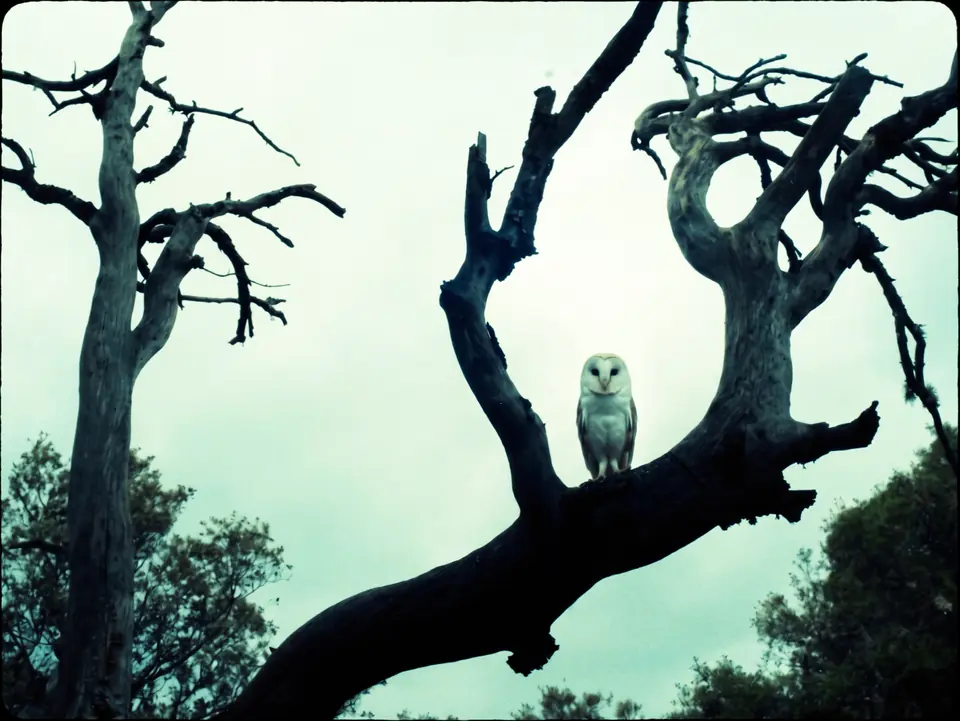
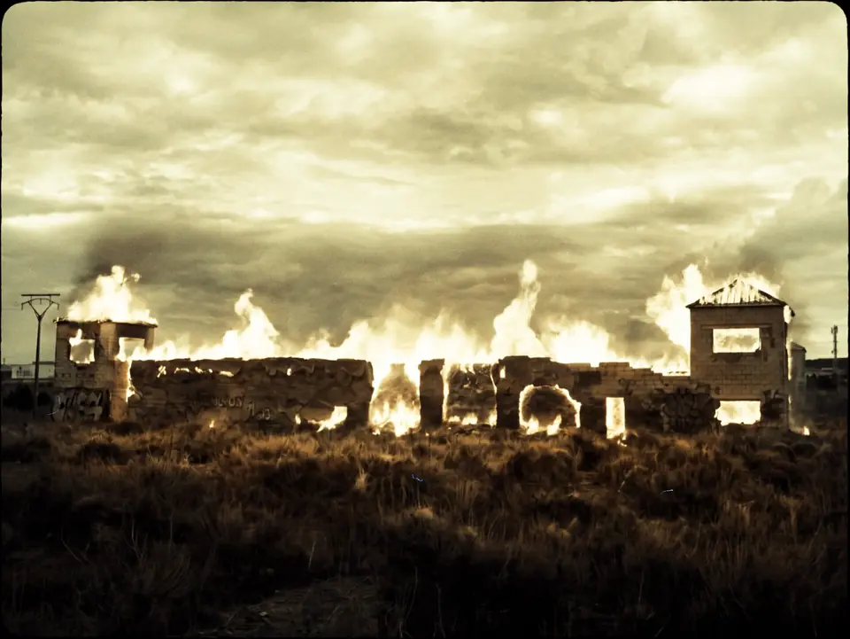
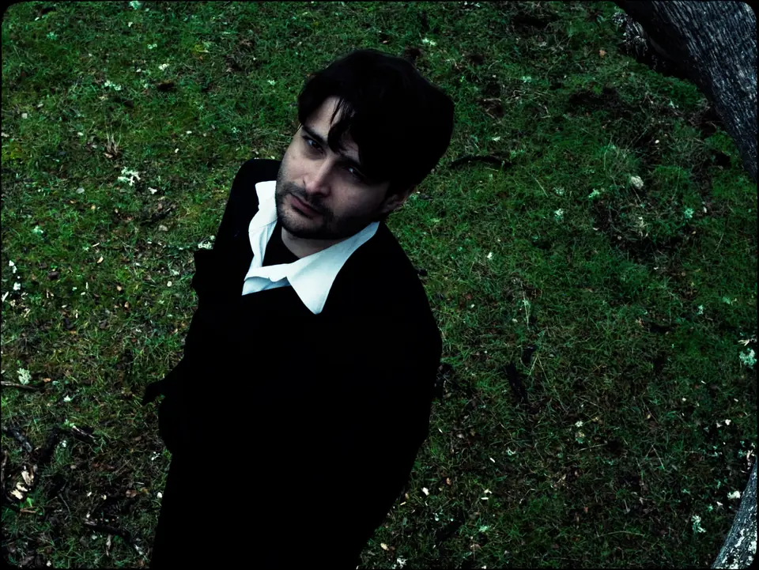

← All work Kill the Boy ClientWichita YearAdd the year for Kill the Boy in content.mjs RoleAdd your role on Kill the Boy in content.mjs  Add a short description of Kill the Boy in content.mjs SoundSoundSoundSoundSoundSound  Next project El Águila →